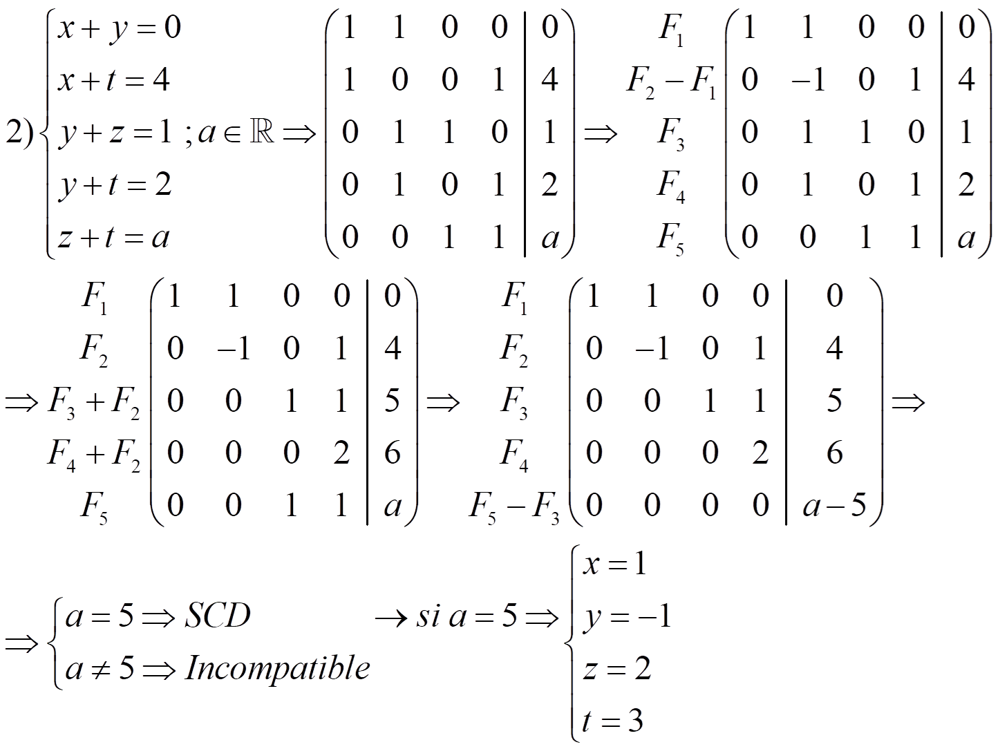
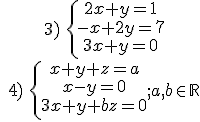

El método de Gauss es una generalización del método de reducción. El objetivo es, usando operaciones elementales, convertir el sistema en sistema escalonado:
Este tipo de sistemas nos permite encontrar la solución de forma sencilla.
Podemos comprobar que todo sistema es equivalente a uno escalonado.
Sea r el número total de ecuaciones y r’ el número total de ecuaciones no absurdas del sistema escalonado de n incógnitas, entonces:
–Si r ≠ r’ el sistema es incompatible
–Si r = r’ el sistemas es compatible
· Si r = r’ = n es un sistema compatible determinado
· Si r = r’ ≠ n es un sistema compatible indeterminado
NOTA: trata de reordenar el sistema para hacer que a11= ±1
Ejemplos:
Discutir un sistema es determinar su compatibilidad. Si tiene parámetros, tenemos que discutir el sistema en función de esos parámetros
Ejemplos:
 Ejercicio. Discute y resuelve los siguientes sistemas:
Ejercicio. Discute y resuelve los siguientes sistemas:


Soluciones:
1) SCD:x = -1, y = 1, z = 3/2, t = -1/2
2) m ≠ 4 SCD: x = 1, y = 2, z = 0
m = 4 SCI: x = 1 - λ, y = 2 - λ, z = λ; λ€R
3) SCD: x = -1, y = 3
4) b ≠ 2 SCD: x = y = ab/(2b-4), z = -2a/(b-2)
b = 2 y a = 0 SCI: x = y = λ, z = -2λ; λ€R
b = 2 y a ≠ 0 incompatible